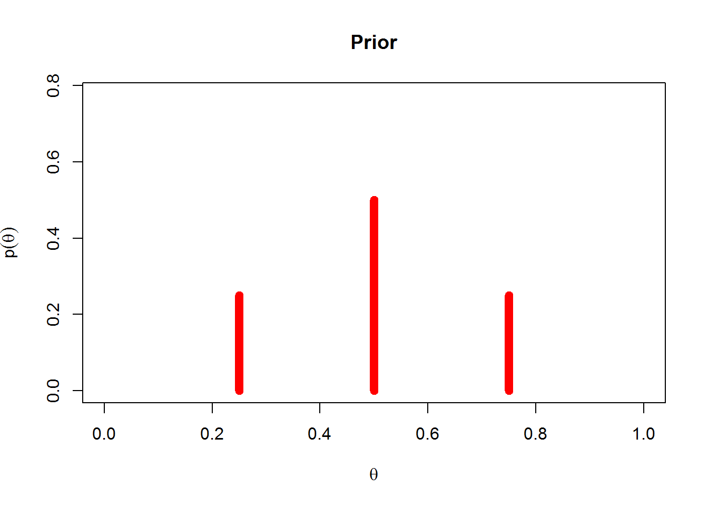
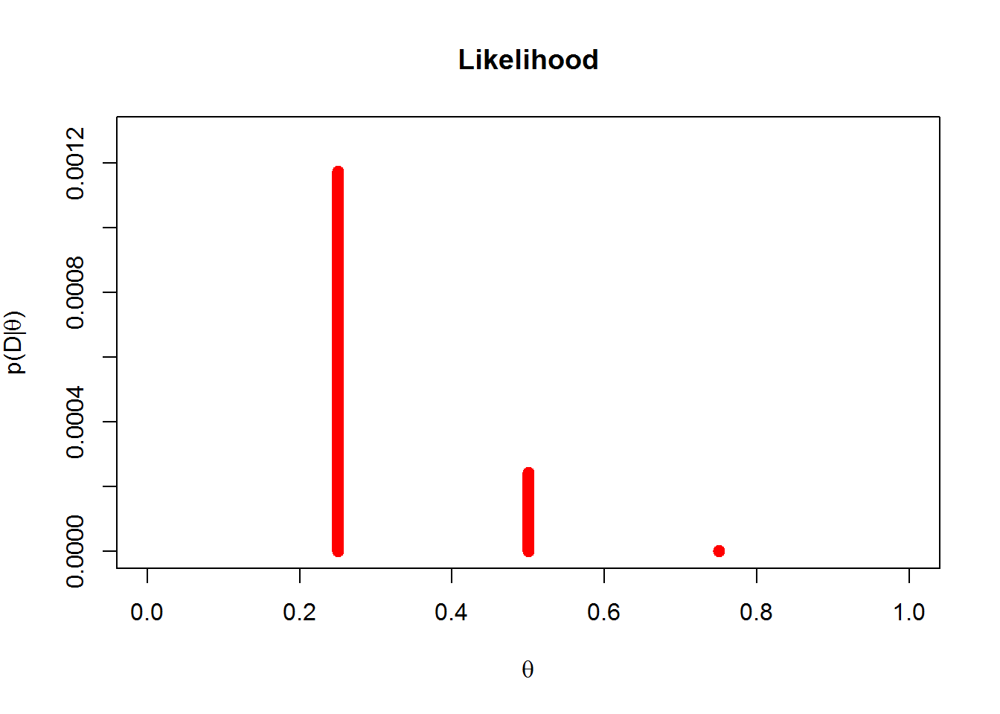
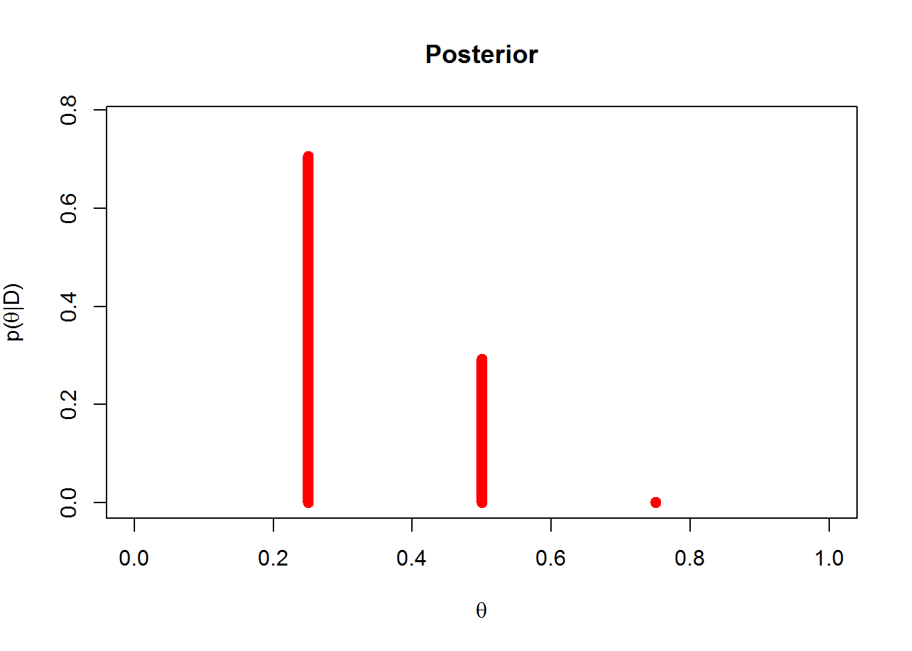

Suppose that in the general population, the probability of having a particular rare disease is 1 in 1000. We denote the true presence or absence of the disease as the value of a parameter, \(\theta\), that can have the value \(\theta\) = 1 if disease is present, or the value \(\theta\) = 0 if the disease is absent. The base rate of the disease is therefore denoted as \(p(\theta = 1) = 0.001\). This is our prior belief that a person, selected at random, has the disease.
Suppose there is a test for the disease that has 99% hit rate, that means if a person has the disease, then the test result if positive 99% of the time. We denote a positive test as D = + and a negative test as D = -. The observed test result is a bit of data that we will use to modify our belief about the value of the underlying disease parameter. The hit rate is expressed as \(p(D = + | \theta = 1) = 0.99\). The test also has a false alarm rate of 5%, this means that 5% of the time when the disease is not present, the test falsely indicates that the disease is present. We denote the false alarm rate as \(p(D = + | \theta = 0) = 0.05\).
Suppose we sample a person at random from the population, administer the test, and it comes up positive.
What is the posterior probability that the person has the disease?
\[\begin{align} p(\theta = 1 | D = +) & = \frac{p(D = + | \theta = 1)p(\theta = 1)}{p(D = +)} \\ & = \frac{p(D = + | \theta = 1)p(\theta = 1)}{\left[p(D = + | \theta = 1)p(\theta = 1) + p(D = + | \theta = 0)p(\theta = 0)\right]} \\ & = \frac{0.99 * 0.001}{(0.99 * 0.001) + (0.05 * 0.999)} \\ & = 0.0194 \end{align}\]
(posterior4.1 <- (0.99 * 0.001) / ((0.99 * 0.001) + (0.05 * (1 - 0.001))))## [1] 0.01943463Continuing from the previous exercise, suppose that the same randomly selected person is retested after the first test comes back positive, and on the retest the result is negative. Now
what is the probability that the person has the disease
(newposterior4.2 <- ((1 - 0.99) * posterior4.1) / (((1 - 0.99) * posterior4.1) + ((1 - 0.05) * (1 - posterior4.1))))## [1] 0.0002085862Consider again the disease and diagnostic test of the previous two exercises. Suppose that a person selected at random from the population gets the test and it comes back negative.
Compute the probability that the person has the disease
(posterior4.4 <- ((1 - 0.99) * 0.001) / (((1 - 0.99) * 0.001) + ((1 - 0.05) * (1 - 0.001))))## [1] 0.00001053674The person is then retested, and on the second test the result is positive…
Compute the probability that the person has the disease. How does this compare with the result from 4.2
(newposterior4.4 <- ((0.99 * posterior4.4) / ((0.99 * posterior4.4) + (0.05 * (1 - posterior4.4)))))## [1] 0.0002085862The result matches, 0.0002086 = 0.0002086
Cognitive neuroscientists investigate which areas of the brain are active during particular mental tasks. In many situations, researchers observe that a certain region of the brain is active and infer that a particular cognitive function is therefore being carried out. Poldrack (2006) cautioned that such inferences are not necessarily firm and need to be made with Bayes’ rule in mind. Poldrack (2006) reported the following frequency table of previous studies that involved any language related task (specifically phonological and semantic processing) and whether or not a particular region of interest (ROI) in the brain was activated:
| Active/Study | Language Study | Not Language Study |
|---|---|---|
| Activated | 166 | 199 |
| Not Activated | 703 | 2154 |
Suppose that a new study is conducted and finds that the ROI is activated. If the prior probability that the task involves language processing is 0.5, what is the posterior probability, given the ROI is activated?
\[\begin{align} p(Lang. | ROI active) & = \frac{p(ROI active | Lang)p(Lang)}{(p(ROI active | Lang)p(Lang)) + (p(ROI active | Not Lang)p(Not Lang))} \\ & = \frac{\frac{166}{166 + 703}*0.5}{\left(\frac{166}{(166 + 703)}*0.5\right) + \left(\frac{199}{199 + 2154}*0.5\right)} \\ & = 0.693 \end{align}\]
(posterior4.5 <- ((166 / (166 + 703)) * 0.5) / (((166 / (166 + 703)) * 0.5) + ((199 / (199 + 2154)) * 0.5)))## [1] 0.6931285Derive the posterior probability in Figure 4.1 (shown below) by hand. The prior has \(p(\theta = 0.25) = 0.25\), \(p(\theta = 0.5) = 0.5\) and \(p(\theta = 0.75) = 0.25\). The data consist of a specific sequence of flips with three heads and nine tails.



# theta and pTheta
theta <- c(0.25, 0.5, 0.75)
pTheta <- c(0.25, 0.5, 0.25)
# coin flip sequence
flips <- c(rep(1,3),rep(0,9))
nHeads <- sum(flips)
nTails <- length(flips) - nHeads
# data given theta (the likelihood)
pDGivenTheta <- theta^nHeads * (1-theta)^nTails
# the posterior
pData = sum( pDGivenTheta * pTheta )
(pThetaGivenData = pDGivenTheta * pTheta / pData)## [1] 0.7054333023 0.2935990252 0.0009676726Do the posterior probabilities, 0.7054333, 0.293599, 0.0009677, sum to 1.0, TRUE